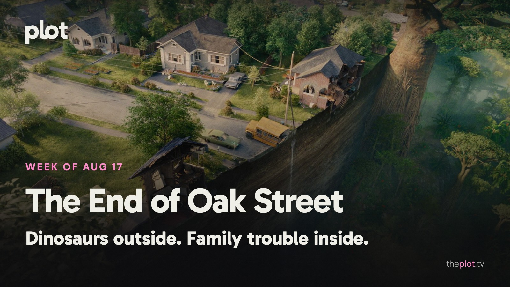

|
the week of August 17
|
|
Staying home is having a terrible week. The End of Oak Street brings prehistoric trouble to the block, while The Last House won't let its family leave at all. Elsewhere, the PAW Patrol has a much gentler dinosaur problem. This weekend makes room for the Pogues' last treasure hunt and the end of Lucky's chase.
 Image: The End of Oak Street (2026), promotional backdrop. Source: TMDB. Text overlay by Plot.
In theaters
 Image: The End of Oak Street (2026), promotional backdrop. Source: TMDB.
The End of Oak Street turns an ordinary neighborhood into dangerous territory. AP enjoys its throwback summer-adventure energy. Anne Hathaway and Ewan McGregor lead a family whose problems have suddenly grown teeth.
PAW Patrol: The Dino Movie supplies the weekend's more reassuring dinosaurs. The animated pups have another rescue mission. A sensible separation of audiences from the prehistoric trouble on Oak Street.
Matthew McConaughey's beekeeper and bandleader anchors The Rivals of Amziah King. The Oklahoma-set film combines a surrogate family with music and crime. For viewers who would prefer this week's oddness to arrive through people rather than creatures.
What everyone's talking about
The End of Oak Street has found an audience willing to follow a summer adventure somewhere nastier than the marketing might suggest. The opening discussion is full of enthusiasm for its energy and creature work, alongside arguments about its harsher choices. RogerEbert.com also welcomes its mix of family feeling and apocalyptic chaos. The useful distinction is tone. Familiar suburban scenery does not promise a gentle ride. If the trailer suggested a cozy dinosaur outing, leave room for some discomfort.
 Image: The Last House (2026), promotional backdrop. Source: TMDB.
The Last House is generating a smaller, more confined argument: how long can a good premise keep you trapped? The Houston Chronicle finds Greta Lee and Wagner Moura give the Netflix film weight. TheWrap sees a familiar lockdown anxiety doing too much of the work. This is a choice about what you enjoy in a thriller. The mystery of the sealed house offers an immediate hook; keeping the people inside it interesting is the longer job.
Now on TV and Streaming
 Image: Don't Say Good Luck (2026), promotional backdrop. Source: TMDB.
Don't Say Good Luck is on Netflix. The new teen comedy film puts a stage production alongside a family crisis. For viewers who want a coming-of-age story with more at stake than getting the opening night right.
 Image: MOURINHO (2026), promotional backdrop. Source: TMDB.
MOURINHO is Netflix's new documentary series about the soccer manager. His career makes room for a large personality as well as results. A sports choice built around the person doing the directing from the sideline.
Coming up
 Watch the official trailer on YouTube Watch the official trailer on YouTube
Insidious: Out of the Further opens Friday, August 21. The new horror film returns to the franchise's supernatural territory. For fans whose ideal late-summer outing involves entering somewhere that everyone sensible would avoid.
 Watch the official trailer on YouTube Watch the official trailer on YouTube
Mutiny opens Friday, August 21. Jason Statham plays a man framed for murder and pulled into an international conspiracy. A thriller for the audience that enjoys a clear grievance and a star with a very physical complaints procedure.
 Watch the official trailer on YouTube Watch the official trailer on YouTube
The Magic Faraway Tree opens in US theaters Friday, August 21. The family film sends children into a tree's changing magical worlds. A change of mood from this week's trapped households: here, discovering somewhere new is part of the pleasure.
The charts
Your trending top ten for August 17, 2026.
Want more? See the full top 20 chart on Plot.
Chart snapshot: 2026-08-13. Movement compared with 2026-08-06.
Weekend watch
 Image: Outer Banks (2020), promotional backdrop. Source: TMDB.
Outer Banks returns to Netflix Thursday, August 20. The series' fifth and final season gives the Pogues one last adventure. Pick this when you are ready to say goodbye to a group whose best intentions rarely produce a sensible plan. Save Outer Banks for the weekend.
 Image: Lucky (2026), promotional backdrop. Source: TMDB.
Lucky finishes its seven-episode run on Apple TV Wednesday, August 19. The series follows Anya Taylor-Joy's fugitive through a criminal past she wants to escape. Now the wait between installments is over. For the viewer who saves a chase thriller until the whole chase is there. Save Lucky for the weekend.
Give your Plot watchlist two good possibilities before Friday arrives. It is much easier to choose a mood than to audition an entire streaming service.
Be that friend. Give the group chat its weekend watchlist.
Chart and title artwork: TMDB. This newsletter uses the TMDB API but is not endorsed or certified by TMDB.
|
|
You're receiving this because you subscribed at theplot.tv.
Unsubscribe
SUSUMU HOUSE · Level 1, 63-73 Ann Street, Surry Hills, NSW 2010 |